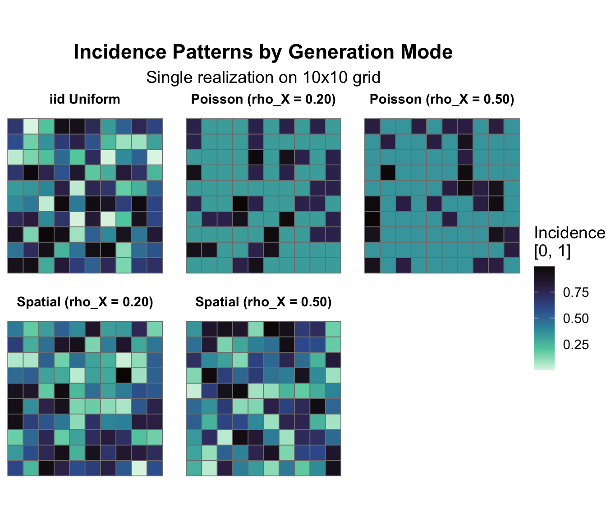
Incidence-Guided Treatment Assignment Designs for Spatial Cluster Randomized Trials
Comprehensive Simulation Study Report
1 Introduction
This report provides a comprehensive reference for the simulation study evaluating 8 treatment assignment designs for Spatial Cluster Randomized Trials (CRTs) when outcome incidence is heterogeneous and spatially structured.
Given known historical incidence data exhibiting spatial heterogeneity, which treatment assignment strategy minimizes estimation error for the direct intervention effect \(\hat{\tau}\) across a range of spatial dependence and spillover configurations?
Application context: Sudden Unexpected Death (SUD) in North Carolina counties. The Poisson incidence mode uses an SUD base rate of 35 per 100,000, consistent with county-level analyses.
The study uses Maximum Likelihood Estimation via a spatial autoregressive model (MLE) as the primary estimator, evaluated across 2,560 parameter scenarios. Three analytical questions structure the results:
- Q1: Which design performs best within each incidence generation mode?
- Q2: How do design rankings change as individual parameters vary?
- Q3: Which design wins for specific parameter combinations?
2 Study Region and Spatial Structure
The study region is a regular square lattice grid:
\[\mathcal{G} = \{s_1, s_2, \ldots, s_N\}\]
where each cluster \(s_i\) is located at integer coordinates \((x_i, y_i)\) on a \(G \times G\) grid, so \(N = G^2\). In this study, \(G = 10\) and \(N = 100\).
2.1 Spatial Contiguity
Two contiguity definitions are considered:
Rook contiguity: clusters sharing an edge (4-connected). \[\mathcal{N}_R(s_i) = \{s_j : |x_i - x_j| + |y_i - y_j| = 1\}\]
Queen contiguity: clusters sharing an edge or vertex (8-connected). \[\mathcal{N}_Q(s_i) = \{s_j : \max(|x_i - x_j|, |y_i - y_j|) = 1\}\]
2.2 Spatial Weight Matrix
Let \(\mathbf{A}\) denote the binary adjacency matrix where \(A_{ij} = \mathbf{1}[s_j \in \mathcal{N}(s_i)]\). The row-standardized spatial weight matrix is:
\[W_{ij} = \frac{A_{ij}}{\sum_{k=1}^{N} A_{ik}}, \quad i \neq j; \quad W_{ii} = 0\]
This ensures \(\sum_j W_{ij} = 1\) for each row, so spatial lags represent neighborhood averages. We construct \(\mathbf{W}_R\) (rook) and \(\mathbf{W}_Q\) (queen) weight matrices.
3 Outcome Data Generating Process
3.1 Spatial Durbin Model (SDM)
The outcome vector \(\mathbf{Y} = (Y_1, \ldots, Y_N)^\top\) is generated from the Spatial Durbin Model:
\[\mathbf{Y} = (\mathbf{I}_N - \rho\mathbf{W})^{-1}\left[\tau\mathbf{Z} + \gamma \cdot \text{Spill}(\mathbf{Z}) + \beta\mathbf{X} + \boldsymbol{\varepsilon}\right]\]
where:
| Symbol | Description | Role |
|---|---|---|
| \(\mathbf{Y}\) | \(N \times 1\) outcome vector | Response |
| \(\rho\) | Spatial autocorrelation parameter | Controls global spatial dependence in \(\mathbf{Y}\) |
| \(\mathbf{W}\) | \(N \times N\) row-standardized weight matrix | Spatial structure (rook or queen) |
| \(\tau\) | Direct treatment effect | Estimand of interest |
| \(\mathbf{Z}\) | \(N \times 1\) binary treatment vector | \(Z_i \in \{0, 1\}\) |
| \(\gamma\) | Spillover effect magnitude | Indirect effect via treated neighbors |
| \(\text{Spill}(\mathbf{Z})\) | \(N \times 1\) spillover term | See below |
| \(\beta\) | Effect of baseline incidence on outcome | Covariate coefficient |
| \(\mathbf{X}\) | \(N \times 1\) baseline incidence vector | \(X_i \in [0, 1]\) |
| \(\boldsymbol{\varepsilon}\) | \(N \times 1\) error vector | \(\varepsilon_i \overset{\text{iid}}{\sim} N(0, \sigma^2)\) |
The spatial multiplier \((\mathbf{I}_N - \rho\mathbf{W})^{-1}\) induces global spatial dependence.
Stationarity condition: \(|\rho| < 1 / \lambda_{\max}(\mathbf{W})\). For row-standardized \(\mathbf{W}\), \(\lambda_{\max} = 1\), so \(|\rho| < 1\).
3.2 Spillover Construction
\[\text{Spill}_i = \frac{\sum_{j \in \mathcal{N}(i)} Z_j}{|\mathcal{N}(i)|} = (\mathbf{W}\mathbf{Z})_i\]
Two spillover types are considered:
- Control-only spillover: \(\text{Spill}_i^{(\text{ctrl})} = \gamma \cdot (\mathbf{W}\mathbf{Z})_i \cdot (1 - Z_i)\)
- Bidirectional spillover: \(\text{Spill}_i^{(\text{both})} = \gamma \cdot (\mathbf{W}\mathbf{Z})_i\)
4 Incidence Generation Modes
The baseline incidence vector \(\mathbf{X}\) represents prior observed outcome rates. Three generation modes are considered, all producing values in \([0, 1]\).
4.1 Mode 1: Independent and Identically Distributed (iid)
\[X_i \overset{\text{iid}}{\sim} \text{Uniform}(0, 1), \quad i = 1, \ldots, N\]
No spatial structure; serves as the baseline. One config (\(\rho_X\) = N/A).
4.3 Mode 3: Poisson Count-Based
- Spatially correlated log-rates: \(\log \boldsymbol{\lambda}^* = \mu_0 \cdot \mathbf{1} + (\mathbf{I}_N - \rho_X \mathbf{W})^{-1}\mathbf{u}\)
- Poisson counts: \(C_i \sim \text{Poisson}(\lambda_i^* \cdot P_i)\) where \(P_i = 1{,}000\)
- Observed rates: \(R_i = C_i / P_i\)
- Rank-normalized: \(X_i = (\text{rank}(R_i) - 0.5) / N\)
Base rate \(\mu_0 = \log(35/100{,}000)\) for SUD. Two configs: \(\rho_X \in \{0.20, 0.50\}\).
Critical design invariant: Incidence is generated once per (mode, \(\rho_X\)) configuration and held fixed across all (\(\rho\), \(\gamma\), nb_type) scenarios.
4.4 Incidence Spatial Patterns
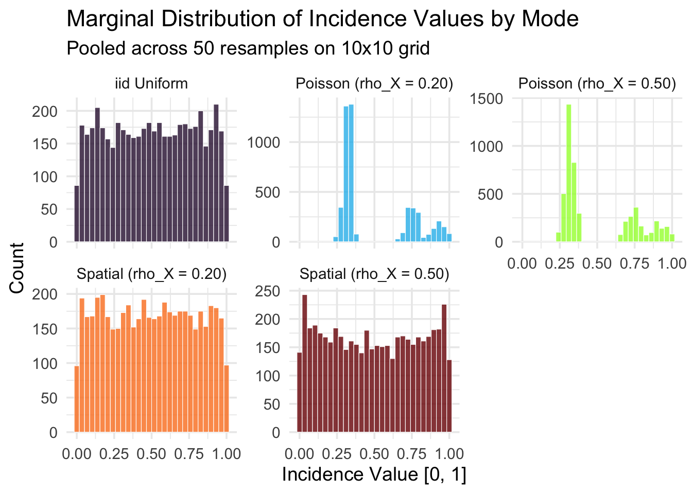
5 Treatment Assignment Designs
Eight designs are evaluated. Each produces a binary treatment vector \(\mathbf{Z} \in \{0, 1\}^N\).
| ID | Name | Deterministic? |
|---|---|---|
| 1 | Design 1: Checkerboard | Yes |
| 2 | Design 2: High Incidence Focus | Yes |
| 3 | Design 3: Saturation Quadrants | No |
| 4 | Design 4: Isolation Buffer | No |
| 5 | Design 5: 2x2 Blocking | No |
| 6 | Design 6: Balanced Quartiles | No |
| 7 | Design 7: Balanced Halves | No |
| 8 | Design 8: Incidence-Guided Saturation Quadrants | No |
5.1 Design 1: Checkerboard (Strict Spatial Stratification)
\[Z_i = (x_i + y_i) \mod 2\]
Treatment in an alternating checkerboard pattern. Deterministic, exactly 50% treated.
5.2 Design 2: High Incidence Focus
\[Z_i = \mathbf{1}[X_i > \text{median}(\mathbf{X})]\]
Treatment assigned to above-median incidence clusters. Deterministic given \(\mathbf{X}\).
5.3 Design 3: Saturation Quadrants
Grid partitioned into four spatial quadrants. Saturation levels \(\{0.20, 0.40, 0.60, 0.80\}\) randomly assigned to quadrants. Within each quadrant, clusters randomly selected at the assigned rate.
5.4 Design 4: Isolation Buffer
Sequential treatment assignment: randomly select an available cluster, assign treatment, remove it and its neighbors from the available set. Treated clusters are never adjacent.
5.5 Design 5: 2x2 Blocking
Grid partitioned into non-overlapping \(2 \times 2\) blocks. Within each block, exactly 2 of 4 clusters randomly assigned to treatment.
5.6 Design 6: Balanced Quartiles
Clusters stratified by incidence quartile. Within each stratum, approximately half randomly assigned to treatment.
5.7 Design 7: Balanced Halves
Clusters stratified into two groups by median baseline incidence. Within each half, approximately half randomly assigned to treatment. A 2-stratum analog of Design 6.
5.8 Design 8: Incidence-Guided Saturation Quadrants
Grid partitioned into four spatial quadrants (same as Design 3). Quadrants ranked by average baseline incidence and deterministically assigned saturation levels:
| Rank (by \(\bar{X}_{Q_k}\)) | Saturation \(p_k\) |
|---|---|
| 1 (highest) | 0.80 |
| 2 | 0.60 |
| 3 | 0.40 |
| 4 (lowest) | 0.20 |
Within each quadrant, clusters randomly selected at the assigned rate. Unlike Design 3, the saturation-to-quadrant mapping is guided by incidence data rather than random.
6 Estimation Methods
6.1 Difference in Means (DIM)
The naive estimator: \[\hat{\tau}_{\text{DIM}} = \bar{Y}_1 - \bar{Y}_0\]
DIM is biased for \(\tau\) when spillover (\(\gamma \neq 0\)) or spatial dependence (\(\rho \neq 0\)) is present.
6.2 Maximum Likelihood Estimation (MLE)
The spatial autoregressive model is estimated via maximum likelihood using spatialreg::lagsarlm():
\[Y_i = \rho \sum_j W_{ij} Y_j + \tau Z_i + \gamma \cdot \text{Spill}_i + \beta X_i + \varepsilon_i\]
MLE simultaneously estimates \(\rho\) and regression coefficients. The true spillover covariate \(\text{Spill}(\mathbf{Z})\) is included as an oracle regressor. Confidence intervals for \(\tau\) use the asymptotic covariance matrix.
MLE is the primary estimator throughout this report. DIM serves only as a naive baseline.
7 Simulation Design
7.1 Parameter Grid
| Parameter | Values | Levels |
|---|---|---|
| Incidence mode | iid, poisson, spatial | 5 configs (1 iid + 2 spatial + 2 poisson) |
| rho_X (incidence spatial autocorr.) | N/A (iid); 0.20, 0.50 (spatial, poisson) | — |
| nb_type (contiguity) | queen, rook | 2 |
| rho (outcome spatial autocorr.) | 0, 0.01, 0.2, 0.5 | 4 |
| gamma (spillover magnitude) | 0.5, 0.6, 0.7, 0.8 | 4 |
| spill_type | both, control_only | 2 |
| design_id | 1, 2, 3, 4, 5, 6, 7, 8 | 8 |
| TOTAL | 2,560 |
7.2 Resampling Structure
| Mode | Design resamples (\(R_d\)) | Outcome resamples (\(R_o\)) | Iterations / scenario |
|---|---|---|---|
| MLE | 25 | 10 | 250 |
7.3 Per-Scenario Reproducibility
Each scenario uses a deterministic seed: \[\text{seed}_s = \texttt{digest::digest2int}(\texttt{paste}(\text{inc\_mode}, \rho_X, \text{nb\_type}, \rho, \gamma, \text{spill\_type}, d_{\text{id}}, \text{sep}=\text{"|}"))\]
This ensures results are reproducible and order-independent.
8 Evaluation Metrics
For each scenario, let \(\hat{\tau}_1, \ldots, \hat{\tau}_K\) denote the \(K\) estimates of \(\tau\) (excluding convergence failures).
- Bias: \(\text{Bias} = \bar{\hat{\tau}} - \tau\)
- Standard Deviation: \(\text{SD} = \sqrt{\frac{1}{K-1}\sum_{k=1}^{K} \left(\hat{\tau}_k - \bar{\hat{\tau}}\right)^2}\)
- Mean Squared Error: \(\text{MSE} = \text{Bias}^2 + \text{SD}^2\) — primary ranking criterion
- Coverage Probability: \(\text{Coverage} = \frac{1}{K}\sum_{k=1}^{K} \mathbf{1}\left[\tau \in \left(\hat{\tau}_{k,L},\ \hat{\tau}_{k,U}\right)\right]\)
- Convergence Failure Rate: Proportion of iterations where MLE failed to converge
9 Results: Overall Performance
9.1 Overall Summary
| Metric | Min | Mean | Max |
|---|---|---|---|
| Bias | -0.898 | -0.029 | 0.455 |
| MSE | 0.012 | 0.206 | 4.061 |
| Coverage | 0.000 | 0.890 | 1.000 |
| Fail Rate | NA | 0.000 | NA |
9.2 Design Comparison by MSE
| Design | Mean Bias | Median MSE | Mean MSE | Mean Coverage | Fail Rate |
|---|---|---|---|---|---|
| Design 8 | 0.019 | 0.064 | 0.079 | 0.939 | 0 |
| Design 3 | 0.022 | 0.065 | 0.080 | 0.937 | 0 |
| Design 6 | 0.012 | 0.073 | 0.103 | 0.937 | 0 |
| Design 7 | 0.014 | 0.082 | 0.108 | 0.937 | 0 |
| Design 4 | 0.001 | 0.144 | 0.148 | 0.940 | 0 |
| Design 2 | 0.016 | 0.090 | 0.156 | 0.937 | 0 |
| Design 5 | 0.008 | 0.128 | 0.229 | 0.938 | 0 |
| Design 1 | -0.322 | 0.451 | 0.744 | 0.553 | 0 |
9.3 MSE by Design and Neighbor Type
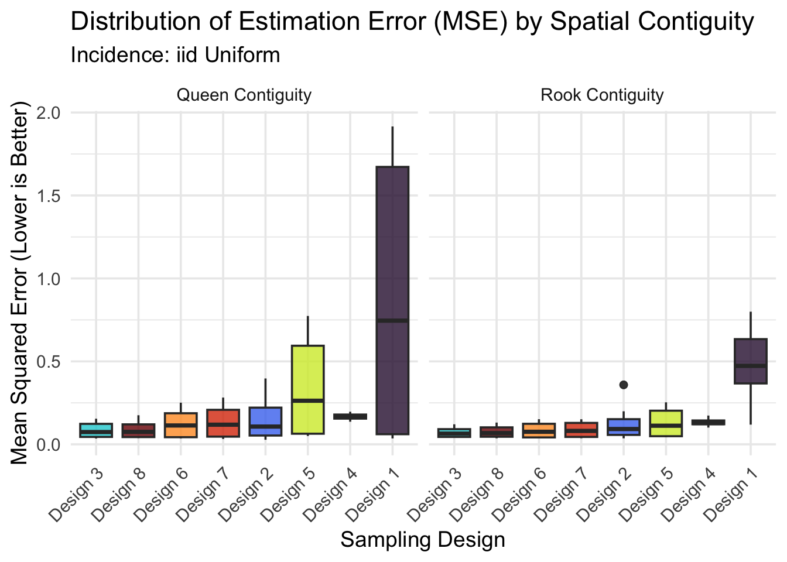
9.4 Coverage by Design
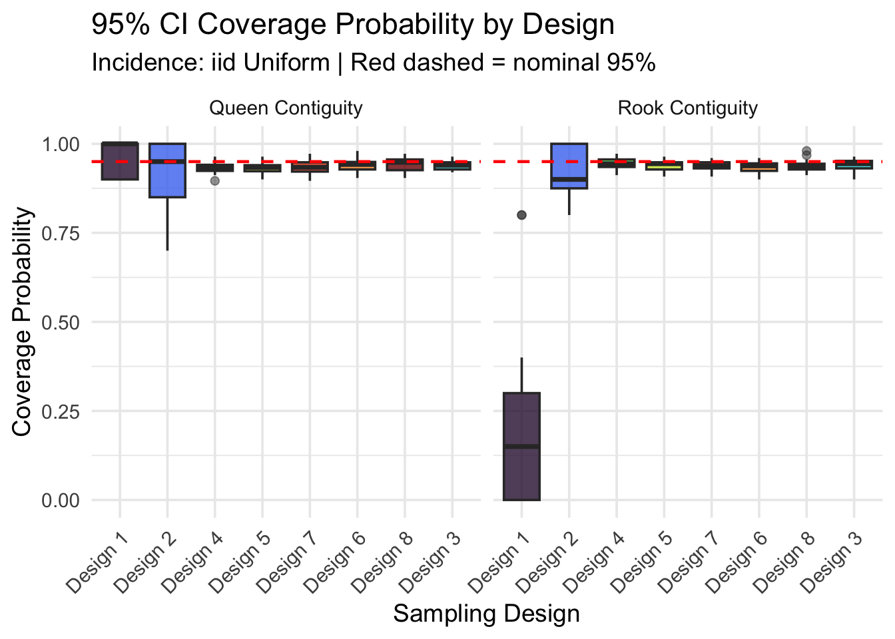
9.5 Bias-Variance Decomposition
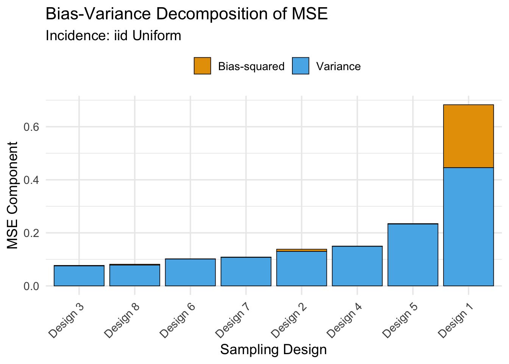
10 Results: Design Rankings by Incidence Mode (Q1)
10.1 Cross-Config MSE Rankings
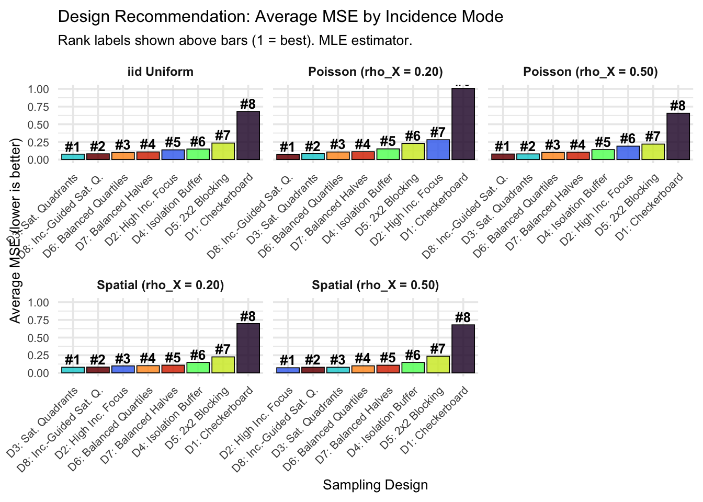
10.2 Cross-Config Coverage Rankings
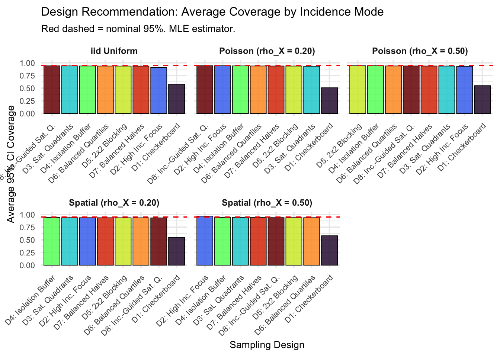
10.3 Detailed Rankings by Incidence Config
| Rank | Design | Avg MSE | Avg Coverage | Avg Bias |
|---|---|---|---|---|
| 1 | D3: Sat. Quadrants | 0.0768 | 0.939 | 0.0269 |
| 2 | D8: Inc.-Guided Sat. Q. | 0.0814 | 0.940 | 0.0376 |
| 3 | D6: Balanced Quartiles | 0.1017 | 0.937 | 0.0135 |
| 4 | D7: Balanced Halves | 0.1082 | 0.936 | 0.0165 |
| 5 | D2: High Inc. Focus | 0.1377 | 0.906 | 0.0402 |
| 6 | D4: Isolation Buffer | 0.1494 | 0.938 | -0.0027 |
| 7 | D5: 2x2 Blocking | 0.2339 | 0.936 | 0.0083 |
| 8 | D1: Checkerboard | 0.6812 | 0.578 | -0.3902 |
| Rank | Design | Avg MSE | Avg Coverage | Avg Bias |
|---|---|---|---|---|
| 1 | D8: Inc.-Guided Sat. Q. | 0.0739 | 0.943 | 0.0340 |
| 2 | D3: Sat. Quadrants | 0.0838 | 0.933 | 0.0389 |
| 3 | D6: Balanced Quartiles | 0.1075 | 0.938 | 0.0244 |
| 4 | D7: Balanced Halves | 0.1113 | 0.937 | 0.0318 |
| 5 | D4: Isolation Buffer | 0.1516 | 0.939 | 0.0123 |
| 6 | D5: 2x2 Blocking | 0.2290 | 0.937 | 0.0214 |
| 7 | D2: High Inc. Focus | 0.2811 | 0.942 | 0.0246 |
| 8 | D1: Checkerboard | 1.0081 | 0.508 | -0.2953 |
| Rank | Design | Avg MSE | Avg Coverage | Avg Bias |
|---|---|---|---|---|
| 1 | D8: Inc.-Guided Sat. Q. | 0.0788 | 0.938 | 0.0106 |
| 2 | D3: Sat. Quadrants | 0.0801 | 0.936 | 0.0218 |
| 3 | D6: Balanced Quartiles | 0.1028 | 0.938 | 0.0125 |
| 4 | D7: Balanced Halves | 0.1054 | 0.937 | 0.0110 |
| 5 | D4: Isolation Buffer | 0.1411 | 0.942 | 0.0053 |
| 6 | D2: High Inc. Focus | 0.1900 | 0.931 | 0.0364 |
| 7 | D5: 2x2 Blocking | 0.2194 | 0.942 | 0.0062 |
| 8 | D1: Checkerboard | 0.6547 | 0.550 | -0.2868 |
| Rank | Design | Avg MSE | Avg Coverage | Avg Bias |
|---|---|---|---|---|
| 1 | D3: Sat. Quadrants | 0.0798 | 0.938 | 0.0198 |
| 2 | D8: Inc.-Guided Sat. Q. | 0.0825 | 0.934 | 0.0031 |
| 3 | D2: High Inc. Focus | 0.0991 | 0.938 | -0.0098 |
| 4 | D6: Balanced Quartiles | 0.1017 | 0.935 | 0.0079 |
| 5 | D7: Balanced Halves | 0.1092 | 0.936 | 0.0131 |
| 6 | D4: Isolation Buffer | 0.1476 | 0.941 | -0.0040 |
| 7 | D5: 2x2 Blocking | 0.2265 | 0.936 | 0.0055 |
| 8 | D1: Checkerboard | 0.6978 | 0.550 | -0.3560 |
| Rank | Design | Avg MSE | Avg Coverage | Avg Bias |
|---|---|---|---|---|
| 1 | D2: High Inc. Focus | 0.0725 | 0.969 | -0.0129 |
| 2 | D8: Inc.-Guided Sat. Q. | 0.0797 | 0.938 | 0.0120 |
| 3 | D3: Sat. Quadrants | 0.0799 | 0.941 | 0.0011 |
| 4 | D6: Balanced Quartiles | 0.1001 | 0.937 | 0.0002 |
| 5 | D7: Balanced Halves | 0.1084 | 0.940 | 0.0000 |
| 6 | D4: Isolation Buffer | 0.1481 | 0.942 | -0.0042 |
| 7 | D5: 2x2 Blocking | 0.2363 | 0.938 | -0.0022 |
| 8 | D1: Checkerboard | 0.6800 | 0.581 | -0.2802 |
11 Results: Parameter Sensitivity (Q2)
11.1 Effect of Outcome Spatial Autocorrelation (Rho)
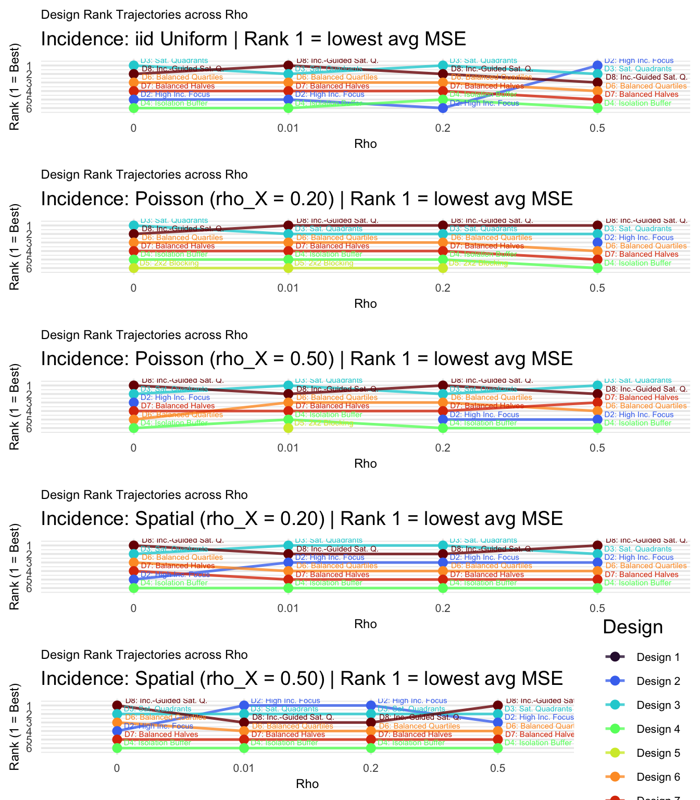
11.2 Effect of Spillover Magnitude (Gamma)
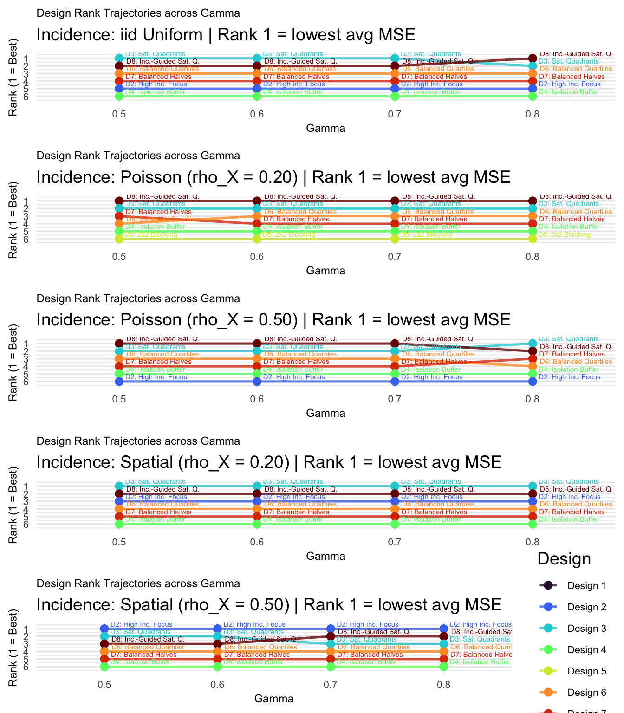
11.3 Sensitivity Analysis (Eta-squared)
| Design | Rho | Gamma | Spillover_Type | Neighbor_Type |
|---|---|---|---|---|
| Design 1 | 0.0301 | 0.0123 | 0.4164 | 0.0954 |
| Design 2 | 0.2274 | 0.0000 | 0.5639 | 0.0091 |
| Design 3 | 0.0200 | 0.0018 | 0.8354 | 0.0342 |
| Design 4 | 0.1691 | 0.0123 | 0.0002 | 0.5471 |
| Design 5 | 0.0045 | 0.0008 | 0.5781 | 0.2035 |
| Design 6 | 0.0049 | 0.0038 | 0.7908 | 0.0808 |
| Design 7 | 0.0014 | 0.0011 | 0.7864 | 0.0870 |
| Design 8 | 0.0543 | 0.0029 | 0.8104 | 0.0242 |
11.4 MSE Per Design Across Gamma
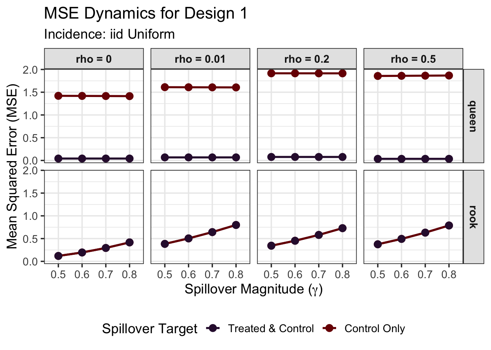
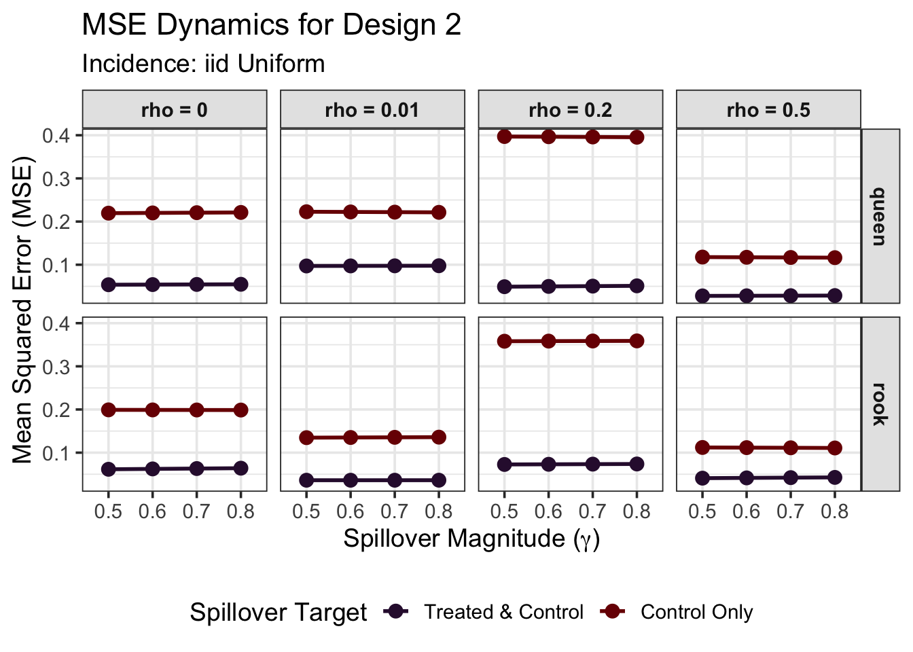
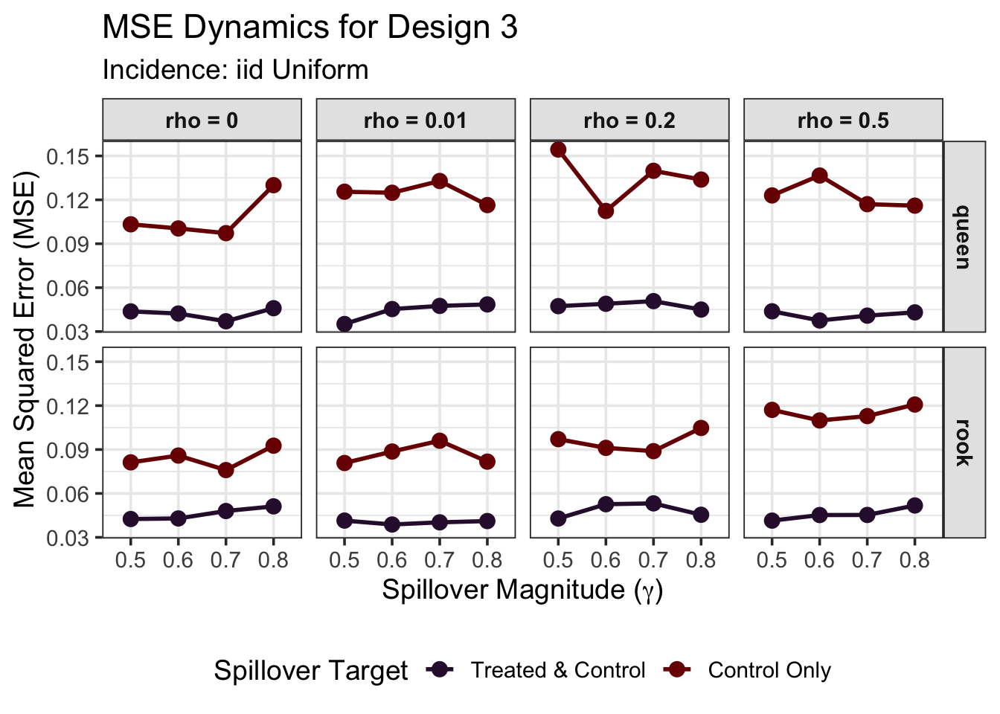

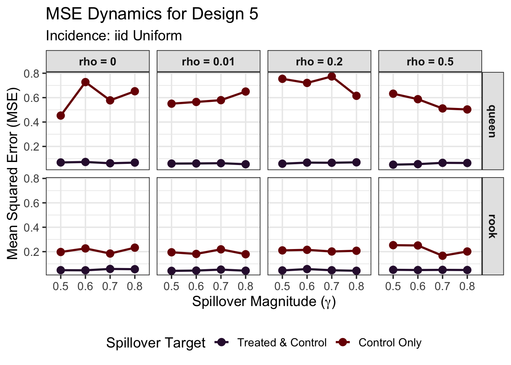
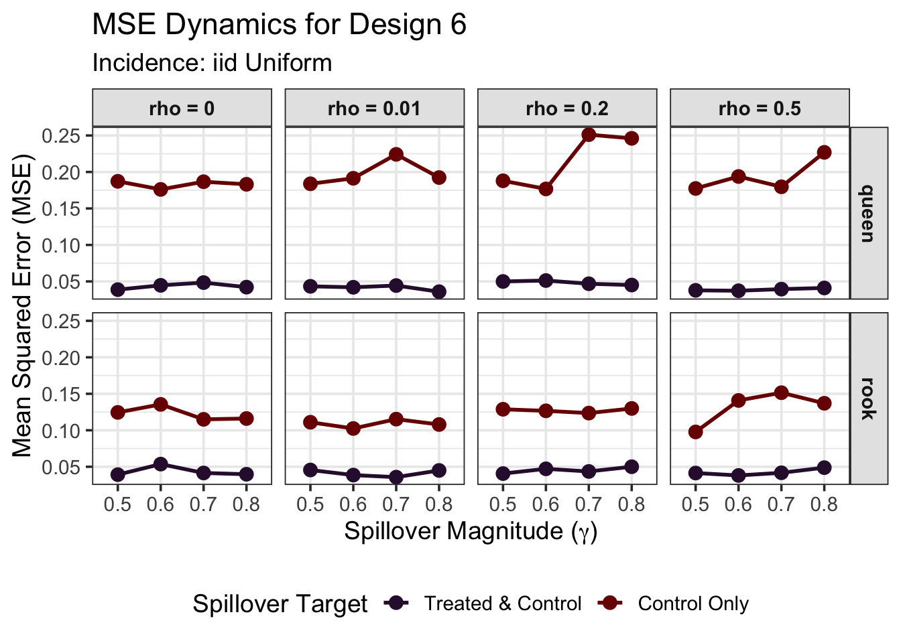
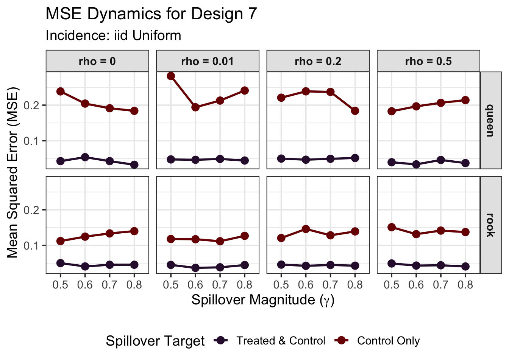

$`Design 1`
$`Design 2`
$`Design 3`
$`Design 4`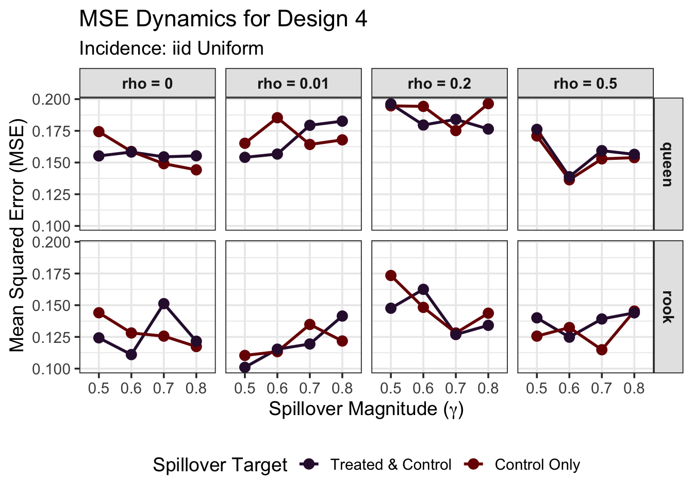
$`Design 5`
$`Design 6`
$`Design 7`
$`Design 8`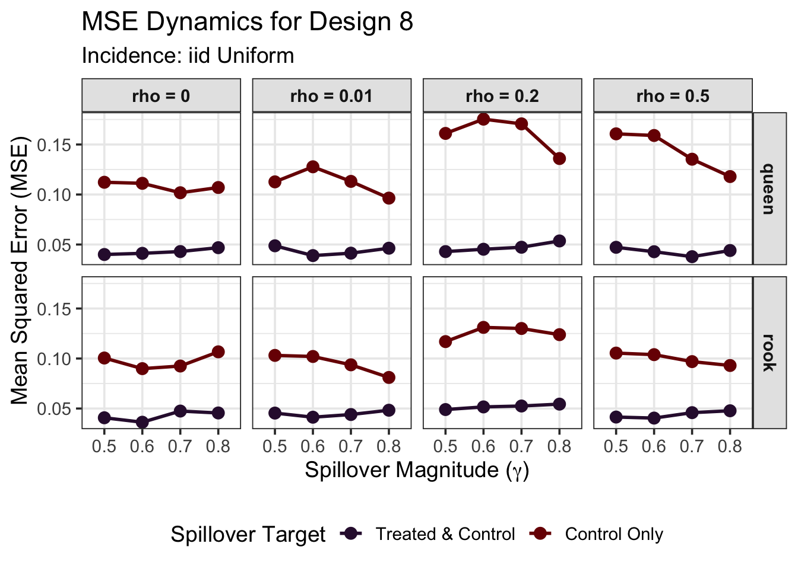
11.5 Marginal Ranking Tables
11.5.1 iid Uniform
| Design | Rho=0 | Rho=0.01 | Rho=0.2 | Rho=0.5 |
|---|---|---|---|---|
| D3: Sat. Quadrants | 0.0700 (#1) | 0.0741 (#2) | 0.0818 (#1) | 0.0814 (#2) |
| D8: Inc.-Guided Sat. Q. | 0.0727 (#2) | 0.0740 (#1) | 0.0963 (#2) | 0.0825 (#3) |
| D6: Balanced Quartiles | 0.0983 (#3) | 0.0974 (#3) | 0.1091 (#3) | 0.1019 (#4) |
| D7: Balanced Halves | 0.1052 (#4) | 0.1097 (#4) | 0.1118 (#4) | 0.1060 (#5) |
| D2: High Inc. Focus | 0.1341 (#5) | 0.1227 (#5) | 0.2195 (#6) | 0.0746 (#1) |
| D4: Isolation Buffer | 0.1421 (#6) | 0.1446 (#6) | 0.1663 (#5) | 0.1444 (#6) |
| D5: 2x2 Blocking | 0.2333 (#7) | 0.2212 (#7) | 0.2596 (#7) | 0.2214 (#7) |
| D1: Checkerboard | 0.4929 (#8) | 0.7101 (#8) | 0.7614 (#8) | 0.7604 (#8) |
| Design | Gamma=0.5 | Gamma=0.6 | Gamma=0.7 | Gamma=0.8 |
|---|---|---|---|---|
| D3: Sat. Quadrants | 0.0763 (#1) | 0.0752 (#1) | 0.0765 (#1) | 0.0793 (#2) |
| D8: Inc.-Guided Sat. Q. | 0.0830 (#2) | 0.0836 (#2) | 0.0808 (#2) | 0.0780 (#1) |
| D6: Balanced Quartiles | 0.0959 (#3) | 0.0998 (#3) | 0.1055 (#3) | 0.1054 (#3) |
| D7: Balanced Halves | 0.1123 (#4) | 0.1061 (#4) | 0.1077 (#4) | 0.1067 (#4) |
| D2: High Inc. Focus | 0.1375 (#5) | 0.1377 (#5) | 0.1378 (#5) | 0.1380 (#5) |
| D4: Isolation Buffer | 0.1533 (#6) | 0.1465 (#6) | 0.1474 (#6) | 0.1502 (#6) |
| D5: 2x2 Blocking | 0.2294 (#7) | 0.2455 (#7) | 0.2300 (#7) | 0.2306 (#7) |
| D1: Checkerboard | 0.5918 (#8) | 0.6447 (#8) | 0.7076 (#8) | 0.7806 (#8) |
| Design | Spillover_Type=both | Spillover_Type=control_only |
|---|---|---|
| D3: Sat. Quadrants | 0.0446 (#3) | 0.1090 (#1) |
| D8: Inc.-Guided Sat. Q. | 0.0450 (#4) | 0.1178 (#2) |
| D6: Balanced Quartiles | 0.0431 (#1) | 0.1603 (#4) |
| D7: Balanced Halves | 0.0442 (#2) | 0.1721 (#5) |
| D2: High Inc. Focus | 0.0555 (#5) | 0.2200 (#6) |
| D4: Isolation Buffer | 0.1490 (#7) | 0.1497 (#3) |
| D5: 2x2 Blocking | 0.0561 (#6) | 0.4116 (#7) |
| D1: Checkerboard | 0.2699 (#8) | 1.0925 (#8) |
11.5.2 Poisson (rho_X = 0.20)
| Design | Rho=0 | Rho=0.01 | Rho=0.2 | Rho=0.5 |
|---|---|---|---|---|
| D8: Inc.-Guided Sat. Q. | 0.0761 (#2) | 0.0747 (#1) | 0.0770 (#1) | 0.0678 (#1) |
| D3: Sat. Quadrants | 0.0718 (#1) | 0.0831 (#2) | 0.0897 (#2) | 0.0907 (#2) |
| D6: Balanced Quartiles | 0.1037 (#3) | 0.1011 (#3) | 0.1099 (#3) | 0.1153 (#4) |
| D7: Balanced Halves | 0.1071 (#4) | 0.1094 (#4) | 0.1131 (#4) | 0.1155 (#5) |
| D4: Isolation Buffer | 0.1376 (#5) | 0.1585 (#5) | 0.1462 (#5) | 0.1643 (#6) |
| D5: 2x2 Blocking | 0.2133 (#6) | 0.2420 (#6) | 0.2274 (#6) | 0.2332 (#7) |
| D2: High Inc. Focus | 0.3631 (#7) | 0.3895 (#7) | 0.2716 (#7) | 0.1003 (#3) |
| D1: Checkerboard | 0.7172 (#8) | 1.1091 (#8) | 0.9172 (#8) | 1.2890 (#8) |
| Design | Gamma=0.5 | Gamma=0.6 | Gamma=0.7 | Gamma=0.8 |
|---|---|---|---|---|
| D8: Inc.-Guided Sat. Q. | 0.0760 (#1) | 0.0745 (#1) | 0.0714 (#1) | 0.0738 (#1) |
| D3: Sat. Quadrants | 0.0816 (#2) | 0.0857 (#2) | 0.0840 (#2) | 0.0839 (#2) |
| D6: Balanced Quartiles | 0.1093 (#4) | 0.1057 (#3) | 0.1093 (#3) | 0.1057 (#3) |
| D7: Balanced Halves | 0.1081 (#3) | 0.1122 (#4) | 0.1126 (#4) | 0.1121 (#4) |
| D4: Isolation Buffer | 0.1559 (#5) | 0.1537 (#5) | 0.1440 (#5) | 0.1529 (#5) |
| D5: 2x2 Blocking | 0.2289 (#6) | 0.2248 (#6) | 0.2184 (#6) | 0.2439 (#6) |
| D2: High Inc. Focus | 0.2801 (#7) | 0.2807 (#7) | 0.2814 (#7) | 0.2821 (#7) |
| D1: Checkerboard | 0.9111 (#8) | 0.9694 (#8) | 1.0373 (#8) | 1.1148 (#8) |
| Design | Spillover_Type=both | Spillover_Type=control_only |
|---|---|---|
| D8: Inc.-Guided Sat. Q. | 0.0453 (#3) | 0.1025 (#1) |
| D3: Sat. Quadrants | 0.0464 (#4) | 0.1213 (#2) |
| D6: Balanced Quartiles | 0.0426 (#1) | 0.1724 (#4) |
| D7: Balanced Halves | 0.0434 (#2) | 0.1791 (#5) |
| D4: Isolation Buffer | 0.1501 (#6) | 0.1532 (#3) |
| D5: 2x2 Blocking | 0.0570 (#5) | 0.4010 (#7) |
| D2: High Inc. Focus | 0.2597 (#7) | 0.3025 (#6) |
| D1: Checkerboard | 0.3182 (#8) | 1.6980 (#8) |
11.5.3 Poisson (rho_X = 0.50)
| Design | Rho=0 | Rho=0.01 | Rho=0.2 | Rho=0.5 |
|---|---|---|---|---|
| D8: Inc.-Guided Sat. Q. | 0.0746 (#1) | 0.0747 (#2) | 0.0831 (#1) | 0.0826 (#2) |
| D3: Sat. Quadrants | 0.0767 (#2) | 0.0741 (#1) | 0.0873 (#2) | 0.0824 (#1) |
| D6: Balanced Quartiles | 0.1025 (#5) | 0.0980 (#3) | 0.0996 (#3) | 0.1109 (#4) |
| D7: Balanced Halves | 0.1003 (#4) | 0.0993 (#4) | 0.1115 (#4) | 0.1104 (#3) |
| D4: Isolation Buffer | 0.1347 (#6) | 0.1353 (#5) | 0.1426 (#6) | 0.1518 (#6) |
| D2: High Inc. Focus | 0.0841 (#3) | 0.3955 (#7) | 0.1326 (#5) | 0.1478 (#5) |
| D5: 2x2 Blocking | 0.2256 (#7) | 0.2200 (#6) | 0.2030 (#7) | 0.2292 (#7) |
| D1: Checkerboard | 0.7196 (#8) | 0.4565 (#8) | 0.6897 (#8) | 0.7529 (#8) |
| Design | Gamma=0.5 | Gamma=0.6 | Gamma=0.7 | Gamma=0.8 |
|---|---|---|---|---|
| D8: Inc.-Guided Sat. Q. | 0.0777 (#1) | 0.0770 (#1) | 0.0810 (#1) | 0.0794 (#2) |
| D3: Sat. Quadrants | 0.0796 (#2) | 0.0781 (#2) | 0.0835 (#2) | 0.0793 (#1) |
| D6: Balanced Quartiles | 0.1054 (#3) | 0.1003 (#3) | 0.1009 (#3) | 0.1044 (#4) |
| D7: Balanced Halves | 0.1071 (#4) | 0.1061 (#4) | 0.1042 (#4) | 0.1040 (#3) |
| D4: Isolation Buffer | 0.1440 (#5) | 0.1374 (#5) | 0.1386 (#5) | 0.1444 (#5) |
| D2: High Inc. Focus | 0.1898 (#6) | 0.1899 (#6) | 0.1901 (#6) | 0.1902 (#6) |
| D5: 2x2 Blocking | 0.2120 (#7) | 0.2321 (#7) | 0.2249 (#7) | 0.2087 (#7) |
| D1: Checkerboard | 0.5624 (#8) | 0.6169 (#8) | 0.6819 (#8) | 0.7574 (#8) |
| Design | Spillover_Type=both | Spillover_Type=control_only |
|---|---|---|
| D8: Inc.-Guided Sat. Q. | 0.0450 (#4) | 0.1125 (#1) |
| D3: Sat. Quadrants | 0.0445 (#3) | 0.1158 (#2) |
| D6: Balanced Quartiles | 0.0424 (#2) | 0.1631 (#4) |
| D7: Balanced Halves | 0.0417 (#1) | 0.1691 (#5) |
| D4: Isolation Buffer | 0.1408 (#6) | 0.1414 (#3) |
| D2: High Inc. Focus | 0.1682 (#7) | 0.2118 (#6) |
| D5: 2x2 Blocking | 0.0536 (#5) | 0.3852 (#7) |
| D1: Checkerboard | 0.2603 (#8) | 1.0490 (#8) |
11.5.4 Spatial (rho_X = 0.20)
| Design | Rho=0 | Rho=0.01 | Rho=0.2 | Rho=0.5 |
|---|---|---|---|---|
| D3: Sat. Quadrants | 0.0807 (#2) | 0.0776 (#1) | 0.0799 (#1) | 0.0811 (#2) |
| D8: Inc.-Guided Sat. Q. | 0.0793 (#1) | 0.0891 (#2) | 0.0819 (#2) | 0.0796 (#1) |
| D2: High Inc. Focus | 0.1186 (#5) | 0.0895 (#3) | 0.0967 (#3) | 0.0917 (#3) |
| D6: Balanced Quartiles | 0.1004 (#3) | 0.1051 (#4) | 0.0990 (#4) | 0.1025 (#4) |
| D7: Balanced Halves | 0.1062 (#4) | 0.1104 (#5) | 0.1043 (#5) | 0.1156 (#5) |
| D4: Isolation Buffer | 0.1500 (#6) | 0.1551 (#6) | 0.1305 (#6) | 0.1547 (#6) |
| D5: 2x2 Blocking | 0.2174 (#7) | 0.2476 (#7) | 0.2085 (#7) | 0.2325 (#7) |
| D1: Checkerboard | 0.7730 (#8) | 1.0335 (#8) | 0.4729 (#8) | 0.5117 (#8) |
| Design | Gamma=0.5 | Gamma=0.6 | Gamma=0.7 | Gamma=0.8 |
|---|---|---|---|---|
| D3: Sat. Quadrants | 0.0797 (#1) | 0.0809 (#1) | 0.0805 (#1) | 0.0782 (#1) |
| D8: Inc.-Guided Sat. Q. | 0.0819 (#2) | 0.0817 (#2) | 0.0823 (#2) | 0.0840 (#2) |
| D2: High Inc. Focus | 0.0987 (#3) | 0.0990 (#3) | 0.0992 (#3) | 0.0995 (#3) |
| D6: Balanced Quartiles | 0.1009 (#4) | 0.0991 (#4) | 0.1042 (#4) | 0.1028 (#4) |
| D7: Balanced Halves | 0.1094 (#5) | 0.1125 (#5) | 0.1071 (#5) | 0.1076 (#5) |
| D4: Isolation Buffer | 0.1486 (#6) | 0.1472 (#6) | 0.1520 (#6) | 0.1425 (#6) |
| D5: 2x2 Blocking | 0.2305 (#7) | 0.2281 (#7) | 0.2187 (#7) | 0.2288 (#7) |
| D1: Checkerboard | 0.6059 (#8) | 0.6601 (#8) | 0.7249 (#8) | 0.8002 (#8) |
| Design | Spillover_Type=both | Spillover_Type=control_only |
|---|---|---|
| D3: Sat. Quadrants | 0.0446 (#2) | 0.1151 (#1) |
| D8: Inc.-Guided Sat. Q. | 0.0455 (#4) | 0.1194 (#2) |
| D2: High Inc. Focus | 0.0587 (#6) | 0.1395 (#3) |
| D6: Balanced Quartiles | 0.0440 (#1) | 0.1595 (#5) |
| D7: Balanced Halves | 0.0448 (#3) | 0.1736 (#6) |
| D4: Isolation Buffer | 0.1467 (#7) | 0.1484 (#4) |
| D5: 2x2 Blocking | 0.0579 (#5) | 0.3951 (#7) |
| D1: Checkerboard | 0.2480 (#8) | 1.1476 (#8) |
11.5.5 Spatial (rho_X = 0.50)
| Design | Rho=0 | Rho=0.01 | Rho=0.2 | Rho=0.5 |
|---|---|---|---|---|
| D2: High Inc. Focus | 0.0993 (#4) | 0.0516 (#1) | 0.0472 (#1) | 0.0921 (#3) |
| D8: Inc.-Guided Sat. Q. | 0.0795 (#1) | 0.0799 (#3) | 0.0871 (#3) | 0.0723 (#1) |
| D3: Sat. Quadrants | 0.0838 (#2) | 0.0731 (#2) | 0.0781 (#2) | 0.0846 (#2) |
| D6: Balanced Quartiles | 0.0990 (#3) | 0.0941 (#4) | 0.1035 (#4) | 0.1037 (#4) |
| D7: Balanced Halves | 0.1123 (#5) | 0.1026 (#5) | 0.1115 (#5) | 0.1072 (#5) |
| D4: Isolation Buffer | 0.1473 (#6) | 0.1396 (#6) | 0.1525 (#6) | 0.1532 (#6) |
| D5: 2x2 Blocking | 0.2072 (#7) | 0.2163 (#7) | 0.2649 (#7) | 0.2568 (#7) |
| D1: Checkerboard | 0.7456 (#8) | 0.6388 (#8) | 0.6749 (#8) | 0.6606 (#8) |
| Design | Gamma=0.5 | Gamma=0.6 | Gamma=0.7 | Gamma=0.8 |
|---|---|---|---|---|
| D2: High Inc. Focus | 0.0723 (#1) | 0.0725 (#1) | 0.0726 (#1) | 0.0728 (#1) |
| D8: Inc.-Guided Sat. Q. | 0.0802 (#3) | 0.0826 (#3) | 0.0778 (#2) | 0.0782 (#2) |
| D3: Sat. Quadrants | 0.0791 (#2) | 0.0780 (#2) | 0.0803 (#3) | 0.0823 (#3) |
| D6: Balanced Quartiles | 0.0972 (#4) | 0.1025 (#4) | 0.0983 (#4) | 0.1023 (#4) |
| D7: Balanced Halves | 0.1080 (#5) | 0.1076 (#5) | 0.1077 (#5) | 0.1102 (#5) |
| D4: Isolation Buffer | 0.1432 (#6) | 0.1495 (#6) | 0.1504 (#6) | 0.1495 (#6) |
| D5: 2x2 Blocking | 0.2323 (#7) | 0.2390 (#7) | 0.2368 (#7) | 0.2371 (#7) |
| D1: Checkerboard | 0.5942 (#8) | 0.6441 (#8) | 0.7049 (#8) | 0.7767 (#8) |
| Design | Spillover_Type=both | Spillover_Type=control_only |
|---|---|---|
| D2: High Inc. Focus | 0.0611 (#6) | 0.0840 (#1) |
| D8: Inc.-Guided Sat. Q. | 0.0462 (#4) | 0.1132 (#2) |
| D3: Sat. Quadrants | 0.0453 (#3) | 0.1145 (#3) |
| D6: Balanced Quartiles | 0.0438 (#2) | 0.1563 (#5) |
| D7: Balanced Halves | 0.0414 (#1) | 0.1754 (#6) |
| D4: Isolation Buffer | 0.1480 (#7) | 0.1482 (#4) |
| D5: 2x2 Blocking | 0.0572 (#5) | 0.4154 (#7) |
| D1: Checkerboard | 0.2250 (#8) | 1.1349 (#8) |
12 Results: Best Design by Parameter Combination (Q3)
12.1 Rho x Gamma Best-Design Maps
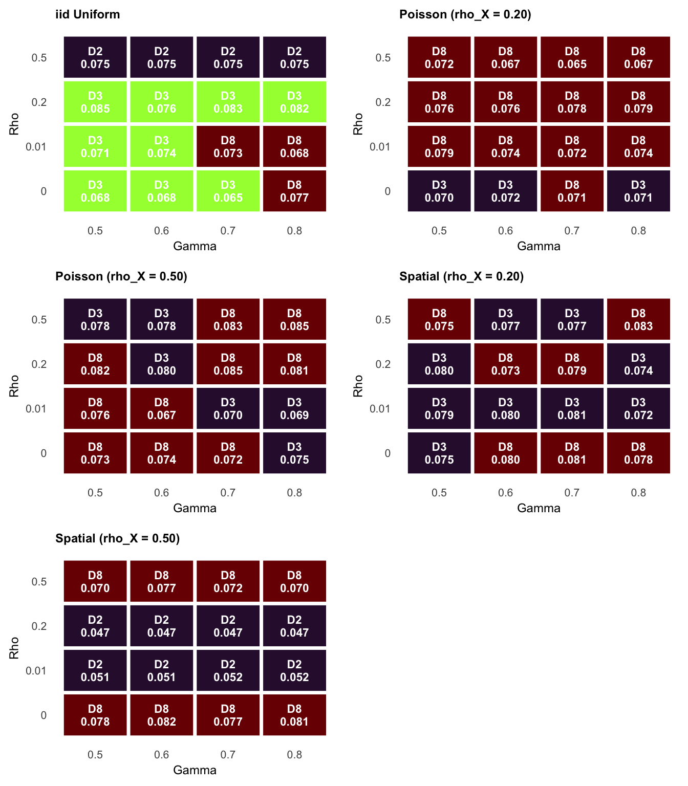
12.2 Rho x Spillover Type Best-Design Maps
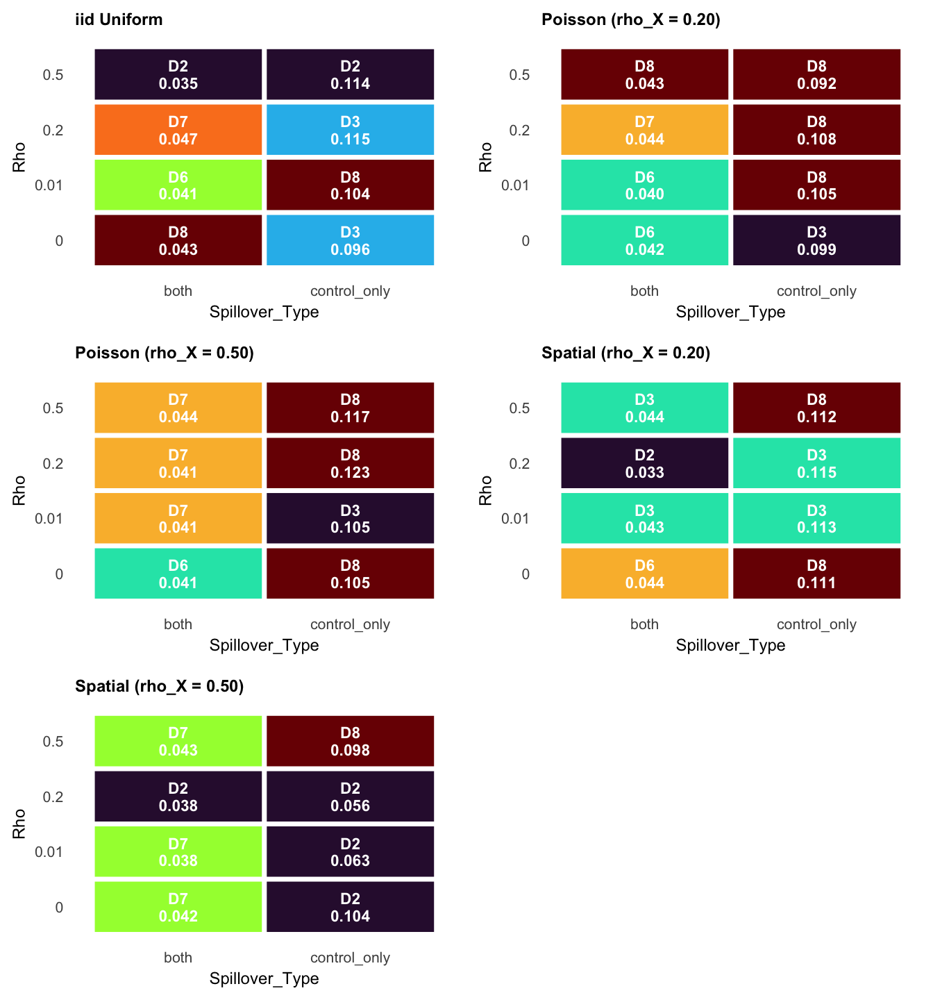
13 Per-Config Narrative Findings
13.1 iid Uniform
Overall Winner: D3: Sat. Quadrants achieves the lowest average MSE (0.0768). Runner-up: D8: Inc.-Guided Sat. Q. (0.0814). The winner dominates in 57.8% of individual scenarios.
Robustness: D3: Sat. Quadrants shows some rank variation across parameter levels.
Coverage: D3: Sat. Quadrants achieves coverage of 0.939; worst design (D1: Checkerboard) achieves only 0.578.
Recommendation: Under iid Uniform incidence, select D3: Sat. Quadrants. It provides 8.9x lower MSE than D1: Checkerboard and near-nominal coverage.
13.2 Poisson (rho_X = 0.20)
Overall Winner: D8: Inc.-Guided Sat. Q. achieves the lowest average MSE (0.0739). Runner-up: D3: Sat. Quadrants (0.0838). The winner dominates in 60.9% of individual scenarios.
Robustness: D8: Inc.-Guided Sat. Q. shows some rank variation across parameter levels.
Coverage: D8: Inc.-Guided Sat. Q. achieves coverage of 0.943; worst design (D1: Checkerboard) achieves only 0.508.
Recommendation: Under Poisson (rho_X = 0.20) incidence, select D8: Inc.-Guided Sat. Q.. It provides 13.6x lower MSE than D1: Checkerboard and near-nominal coverage.
13.3 Poisson (rho_X = 0.50)
Overall Winner: D8: Inc.-Guided Sat. Q. achieves the lowest average MSE (0.0788). Runner-up: D3: Sat. Quadrants (0.0801). The winner dominates in 56.2% of individual scenarios.
Robustness: D8: Inc.-Guided Sat. Q. shows some rank variation across parameter levels.
Coverage: D8: Inc.-Guided Sat. Q. achieves coverage of 0.938; worst design (D1: Checkerboard) achieves only 0.550.
Recommendation: Under Poisson (rho_X = 0.50) incidence, select D8: Inc.-Guided Sat. Q.. It provides 8.3x lower MSE than D1: Checkerboard and near-nominal coverage.
13.4 Spatial (rho_X = 0.20)
Overall Winner: D3: Sat. Quadrants achieves the lowest average MSE (0.0798). Runner-up: D8: Inc.-Guided Sat. Q. (0.0825). The winner dominates in 62.5% of individual scenarios.
Robustness: D3: Sat. Quadrants shows some rank variation across parameter levels.
Coverage: D3: Sat. Quadrants achieves coverage of 0.938; worst design (D1: Checkerboard) achieves only 0.550.
Recommendation: Under Spatial (rho_X = 0.20) incidence, select D3: Sat. Quadrants. It provides 8.7x lower MSE than D1: Checkerboard and near-nominal coverage.
13.5 Spatial (rho_X = 0.50)
Overall Winner: D2: High Inc. Focus achieves the lowest average MSE (0.0725). Runner-up: D8: Inc.-Guided Sat. Q. (0.0797). The winner dominates in 48.4% of individual scenarios.
Robustness: D2: High Inc. Focus shows some rank variation across parameter levels.
Coverage: D2: High Inc. Focus achieves coverage of 0.969; worst design (D1: Checkerboard) achieves only 0.581.
Recommendation: Under Spatial (rho_X = 0.50) incidence, select D2: High Inc. Focus. It provides 9.4x lower MSE than D1: Checkerboard and near-nominal coverage.
14 Practical Design Selection Guide
| Situation | Recommended Design | Justification |
|---|---|---|
| Default (uncertain parameters) | D3: Sat. Quadrants | Ranks 1st in 2 of 5 configs across all Gamma levels |
| Spillover is 'both' AND Rho <= 0.01 | D7: Balanced Halves | Winner shifts at this corner; verify from Rho x Spillover_Type heatmap |
| ANY scenario | Avoid D1: Checkerboard | Invalid CIs (coverage 0.51--0.58); MSE 8.3--13.6x higher than winner |
| ANY scenario | Avoid D5: 2x2 Blocking under queen contiguity | Queen contiguity amplifies 2x2 block effects |
15 Subgroup Robustness Profiles
15.1 iid Uniform
| Design | Best_MSE | Q25_MSE | Median_MSE | Q75_MSE | Worst_MSE | IQR_MSE |
|---|---|---|---|---|---|---|
| Design 3 | 0.0351 | 0.0447 | 0.0646 | 0.1105 | 0.1544 | 0.0658 |
| Design 8 | 0.0363 | 0.0454 | 0.0677 | 0.1114 | 0.1753 | 0.0661 |
| Design 6 | 0.0358 | 0.0421 | 0.0757 | 0.1576 | 0.2512 | 0.1155 |
| Design 7 | 0.0327 | 0.0449 | 0.0827 | 0.1590 | 0.2818 | 0.1141 |
| Design 2 | 0.0278 | 0.0530 | 0.1043 | 0.2042 | 0.3970 | 0.1512 |
| Design 5 | 0.0426 | 0.0560 | 0.1195 | 0.3031 | 0.7737 | 0.2471 |
| Design 4 | 0.1010 | 0.1281 | 0.1487 | 0.1659 | 0.1964 | 0.0377 |
| Design 1 | 0.0356 | 0.1083 | 0.4729 | 0.9530 | 1.9159 | 0.8447 |
15.2 Poisson (rho_X = 0.20)
| Design | Best_MSE | Q25_MSE | Median_MSE | Q75_MSE | Worst_MSE | IQR_MSE |
|---|---|---|---|---|---|---|
| Design 8 | 0.0374 | 0.0454 | 0.0608 | 0.1034 | 0.1446 | 0.0580 |
| Design 3 | 0.0406 | 0.0456 | 0.0702 | 0.1065 | 0.1980 | 0.0609 |
| Design 7 | 0.0362 | 0.0438 | 0.0781 | 0.1689 | 0.2610 | 0.1251 |
| Design 6 | 0.0357 | 0.0427 | 0.0800 | 0.1553 | 0.2555 | 0.1126 |
| Design 5 | 0.0448 | 0.0570 | 0.1260 | 0.3076 | 0.7115 | 0.2505 |
| Design 4 | 0.0969 | 0.1319 | 0.1455 | 0.1657 | 0.2349 | 0.0339 |
| Design 2 | 0.0235 | 0.0722 | 0.2460 | 0.4426 | 0.7982 | 0.3704 |
| Design 1 | 0.0537 | 0.2567 | 0.5481 | 1.0538 | 4.0611 | 0.7970 |
15.3 Poisson (rho_X = 0.50)
| Design | Best_MSE | Q25_MSE | Median_MSE | Q75_MSE | Worst_MSE | IQR_MSE |
|---|---|---|---|---|---|---|
| Design 3 | 0.0367 | 0.0442 | 0.0634 | 0.1110 | 0.1725 | 0.0668 |
| Design 8 | 0.0370 | 0.0449 | 0.0644 | 0.1010 | 0.1724 | 0.0561 |
| Design 6 | 0.0327 | 0.0426 | 0.0781 | 0.1451 | 0.2771 | 0.1025 |
| Design 7 | 0.0298 | 0.0426 | 0.0853 | 0.1548 | 0.2443 | 0.1122 |
| Design 5 | 0.0395 | 0.0533 | 0.1157 | 0.2949 | 0.8079 | 0.2416 |
| Design 2 | 0.0493 | 0.0843 | 0.1287 | 0.2036 | 0.6502 | 0.1193 |
| Design 4 | 0.1054 | 0.1239 | 0.1412 | 0.1559 | 0.1881 | 0.0320 |
| Design 1 | 0.0202 | 0.1664 | 0.4381 | 0.7554 | 2.1564 | 0.5890 |
15.4 Spatial (rho_X = 0.20)
| Design | Best_MSE | Q25_MSE | Median_MSE | Q75_MSE | Worst_MSE | IQR_MSE |
|---|---|---|---|---|---|---|
| Design 3 | 0.0345 | 0.0440 | 0.0631 | 0.1111 | 0.1618 | 0.0670 |
| Design 8 | 0.0333 | 0.0451 | 0.0669 | 0.1138 | 0.1992 | 0.0687 |
| Design 6 | 0.0360 | 0.0440 | 0.0768 | 0.1394 | 0.2265 | 0.0955 |
| Design 2 | 0.0124 | 0.0509 | 0.0782 | 0.1351 | 0.2586 | 0.0842 |
| Design 7 | 0.0344 | 0.0439 | 0.0865 | 0.1624 | 0.2496 | 0.1185 |
| Design 5 | 0.0443 | 0.0539 | 0.1278 | 0.3036 | 0.7249 | 0.2497 |
| Design 4 | 0.1079 | 0.1285 | 0.1445 | 0.1604 | 0.2158 | 0.0319 |
| Design 1 | 0.0343 | 0.1650 | 0.4272 | 0.8489 | 3.0219 | 0.6838 |
15.5 Spatial (rho_X = 0.50)
| Design | Best_MSE | Q25_MSE | Median_MSE | Q75_MSE | Worst_MSE | IQR_MSE |
|---|---|---|---|---|---|---|
| Design 8 | 0.0389 | 0.0457 | 0.0647 | 0.1037 | 0.1686 | 0.0580 |
| Design 3 | 0.0359 | 0.0444 | 0.0670 | 0.1092 | 0.1724 | 0.0648 |
| Design 2 | 0.0135 | 0.0499 | 0.0672 | 0.0895 | 0.1433 | 0.0396 |
| Design 6 | 0.0364 | 0.0433 | 0.0727 | 0.1452 | 0.2282 | 0.1019 |
| Design 7 | 0.0343 | 0.0427 | 0.0804 | 0.1670 | 0.2627 | 0.1243 |
| Design 5 | 0.0460 | 0.0559 | 0.1253 | 0.3048 | 0.7440 | 0.2489 |
| Design 4 | 0.1039 | 0.1314 | 0.1419 | 0.1625 | 0.1987 | 0.0311 |
| Design 1 | 0.0169 | 0.1502 | 0.3835 | 0.9498 | 2.2750 | 0.7996 |
15.6 MSE Heatmap
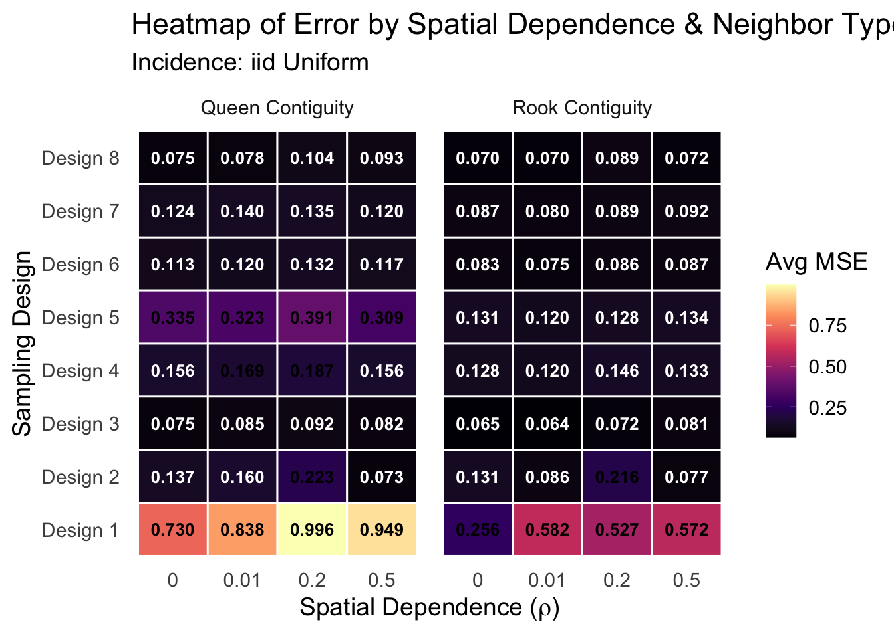
15.7 Design Rank Frequency
| Design | Rank_2 | Rank_3 | Rank_4 | Rank_6 | Rank_7 | Rank_8 | Rank_1 | Rank_5 |
|---|---|---|---|---|---|---|---|---|
| Design 3 | 20.3 | 17.2 | 14.1 | 1.6 | 0.0 | 0.0 | 34.4 | 12.5 |
| Design 8 | 34.4 | 14.1 | 7.8 | 6.2 | 0.0 | 0.0 | 23.4 | 14.1 |
| Design 6 | 14.1 | 14.1 | 26.6 | 7.8 | 0.0 | 0.0 | 18.8 | 18.8 |
| Design 2 | 9.4 | 7.8 | 3.1 | 39.1 | 14.1 | 3.1 | 17.2 | 6.2 |
| Design 7 | 10.9 | 18.8 | 25.0 | 12.5 | 0.0 | 0.0 | 6.2 | 26.6 |
| Design 1 | 7.8 | 4.7 | 1.6 | 7.8 | 9.4 | 68.8 | 0.0 | 0.0 |
| Design 4 | 1.6 | 17.2 | 18.8 | 3.1 | 23.4 | 26.6 | 0.0 | 9.4 |
| Design 5 | 1.6 | 6.2 | 3.1 | 21.9 | 53.1 | 1.6 | 0.0 | 12.5 |
16 Conclusions and Future Work
The simulation study evaluated 8 treatment assignment designs across 2,560 parameter scenarios.
Key findings:
MLE achieves near-nominal coverage. Average coverage across all scenarios is 0.89, close to the nominal 0.95 target.
Design 8 is the top performer. It achieves the lowest average MSE (0.079) and coverage of 0.939.
Design 1 is consistently worst. Highest MSE (0.744) and lowest coverage (0.553). Its perfect spatial alternation creates systematic confounding.
Spillover type is the key moderator. Under control-only spillover, D3: Sat. Quadrants dominates. Under bidirectional spillover, D6: Balanced Quartiles becomes competitive.
Design rankings are stable across incidence modes and Gamma levels. The ordering is largely consistent, and spillover magnitude does not affect design choice.
16.1 Limitations and Planned Extensions
- Oracle MLE: The MLE model uses the true spillover covariate.
- Fixed \(\tau\): All results use \(\tau = 1.0\). Sensitivity to varying \(\tau\) is planned.
- Equal populations: Poisson mode uses \(P_i = 1{,}000\) for all clusters.
- Grid sensitivity: Results use \(G = 10\) (\(N = 100\)) only.
17 Appendix A: Simulation Pseudocode
BUILD spatial grid -> coords, W_rook, W_queen, listw_rook, listw_queen
SET I_mat = diag(N)
FOR EACH incidence_mode IN {iid, spatial, poisson}:
SET rho_X_values = {0} if iid, else {0.20, 0.50}
FOR EACH rho_X IN rho_X_values:
GENERATE X_matrix (N x R_o) using incidence_mode, rho_X, W_queen
SET base_incidence = X_matrix[, 1]
FOR EACH nb_type IN {rook, queen}:
SELECT active W, listw for nb_type
FOR EACH rho IN {0.00, 0.01, 0.20, 0.50}:
COMPUTE inv_mat = solve(I_mat - rho * W)
GENERATE Epsilon_matrix (N x R_o) ~ N(0, sigma^2)
COMPUTE baseline_part = inv_mat %*% (X_matrix * beta + Epsilon_matrix)
FOR EACH gamma IN {0.50, 0.60, 0.70, 0.80}:
FOR EACH spill_type IN {control_only, both}:
FOR EACH design_id IN {1, 2, 3, 4, 5, 6, 7, 8}:
SET scenario_seed = hash(incidence_mode, rho_X, nb_type,
rho, gamma, spill_type, design_id)
set.seed(scenario_seed)
GENERATE Z_matrix (N x R_d)
FOR d IN 1:R_d:
Z = Z_matrix[, d]
COMPUTE spillover = W %*% Z (apply spill_type mask)
COMPUTE trt_effect = inv_mat %*% (tau * Z + spillover)
Y_sim = trt_effect + baseline_part
ESTIMATE tau_hat, CI for each of R_o outcome columns
COMPUTE Bias, SD, MSE, Coverage, Fail_Rate
STORE results row18 Appendix B: File Locations
| File | Location |
|---|---|
| sim_results_DIM_combined_20260304_195321.rds | results/sim_data/ |
| sim_results_DIM_iid_20260304_195321.rds | results/sim_data/ |
| sim_results_DIM_poisson_20260304_195321.rds | results/sim_data/ |
| sim_results_DIM_spatial_20260304_195321.rds | results/sim_data/ |
| sim_results_MLE_combined_20260322_151030.rds | results/sim_data/ |
| sim_results_MLE_iid_20260322_151030.rds | results/sim_data/ |
| sim_results_MLE_poisson_20260322_151030.rds | results/sim_data/ |
| sim_results_MLE_spatial_20260322_151030.rds | results/sim_data/ |
All simulation data files are located in: results/sim_data/
Code modules: code/01_spatial_setup.R through code/08_design_recommendations.R
Reports: code/00_mathematical_specification.Rmd, code/07_results_summary.qmd, code/09_MLE_design_recommendation_report.qmd